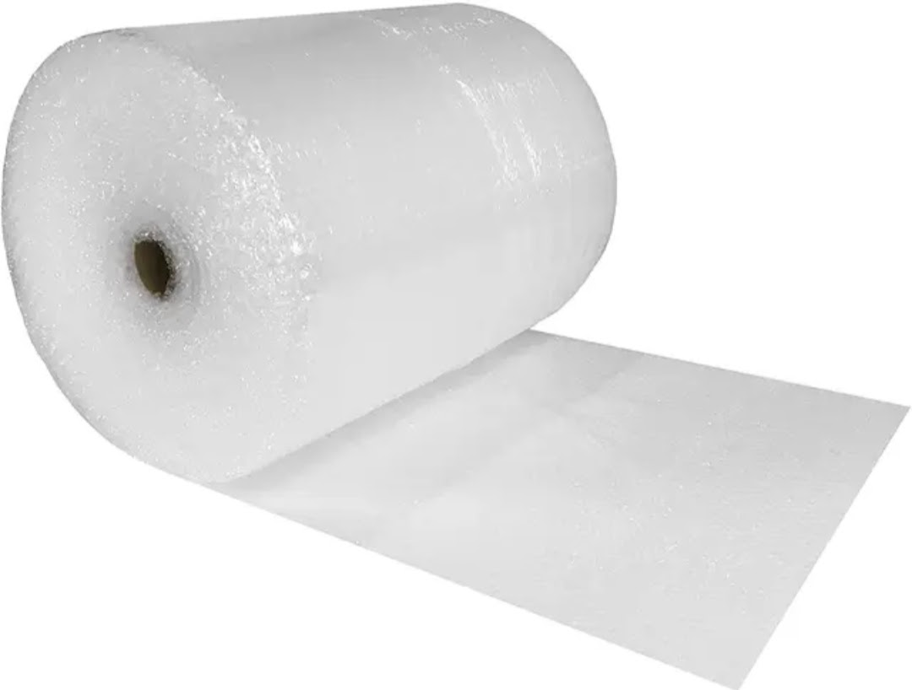
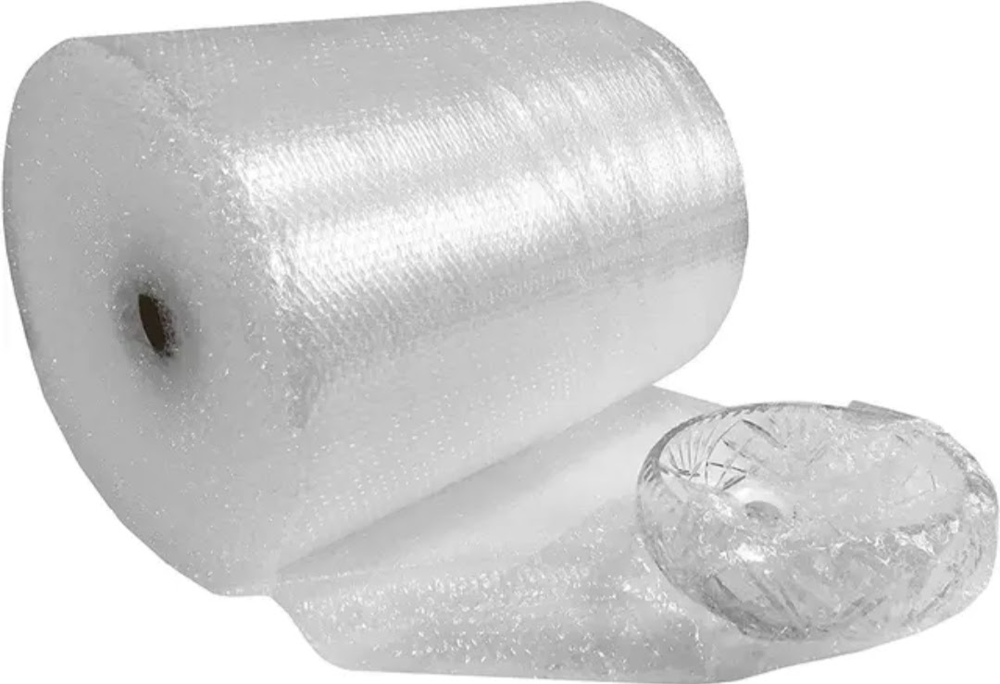
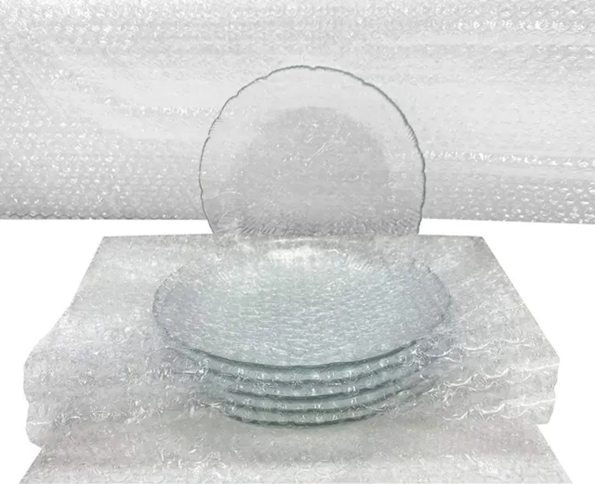
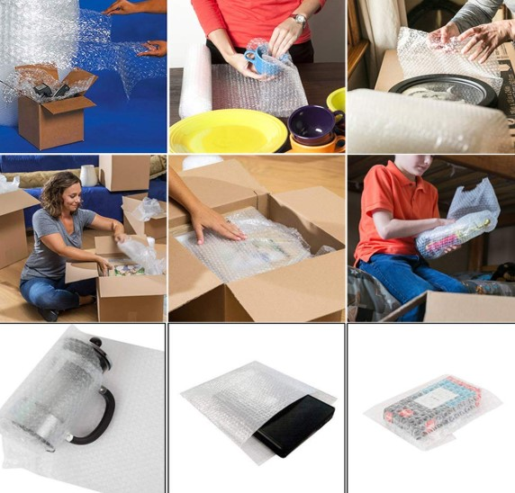
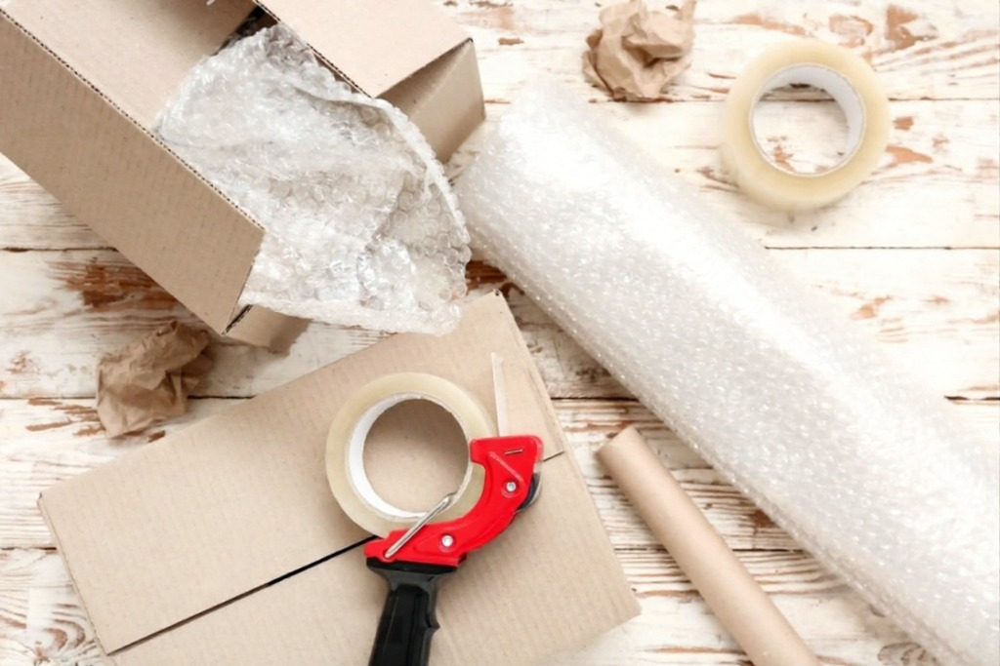
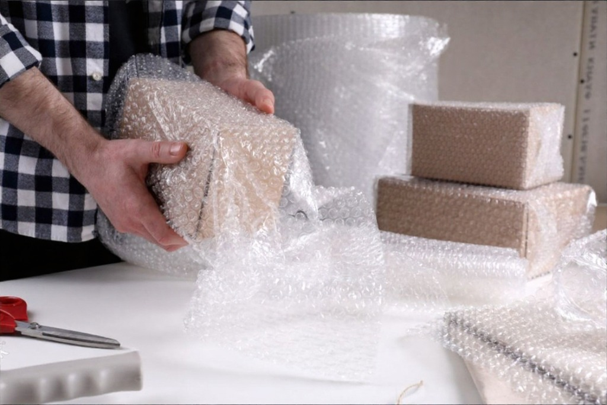

Protective bubble wrap rolls designed to cushion and safeguard fragile items during packaging, storage, and transportation.







Bubble Rolls are widely used protective packaging materials made from polyethylene film with evenly spaced air-filled bubbles. These bubbles provide excellent cushioning, shock absorption, and surface protection for fragile and sensitive items.
Lightweight and flexible, bubble rolls are easy to handle and commonly used in Indian packaging operations where goods travel long distances and require impact protection during loading and unloading.
Small bubble rolls are suitable for lightweight or delicate items, while large bubble rolls are recommended for heavier goods and rough handling common during Indian transport and loading.